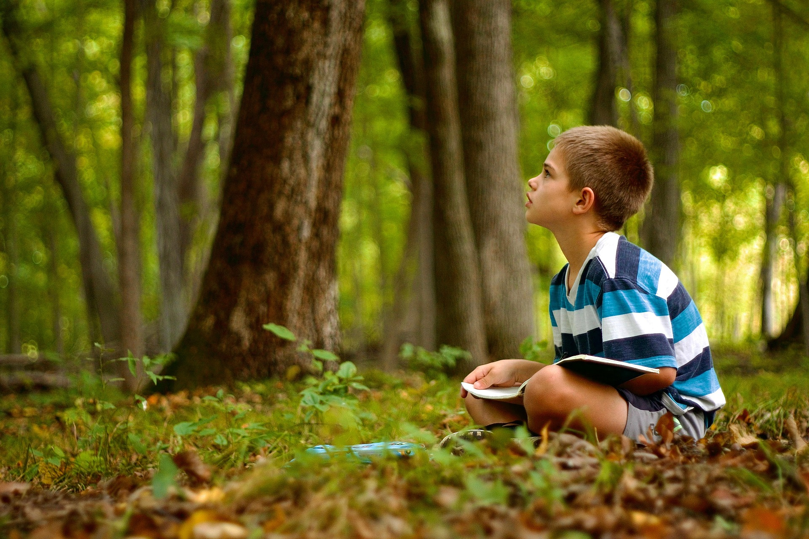
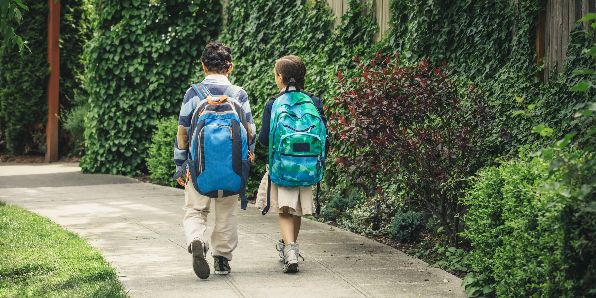
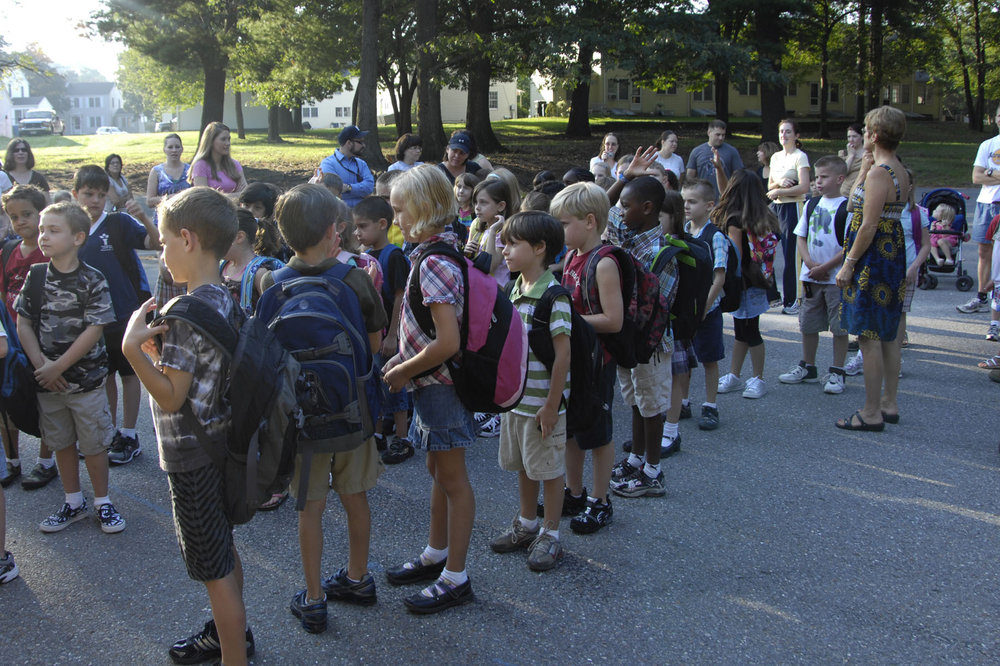
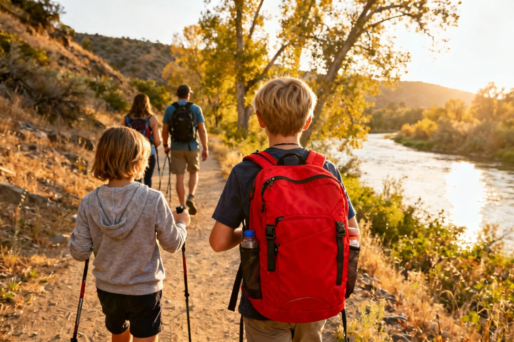

Nieuws & Updates
Laatste nieuws
Voorbeeldberichten voor deze nieuwspagina. Vervang deze teksten door het nieuws van jouw organisatie.

Goed voorbereid op pad
Comfortabele schoenen, voldoende water en een fijne wandelgroep: ontdek handige tips voor een gezellige wandelavond.
Lees meerSamen wandelen met je school
Een Avond4daagse loop je samen. Lees tips voor het organiseren van een wandelgroep en het begeleiden van deelnemers.
Lees meer
Nieuwe routes en startpunten
Bekijk de laatste updates over routes, startpunten en praktische aankondigingen voor de komende wandelavonden.
Lees meer
Zo bereid je je voor op de route
Check de handigste spullen, routekaarten en praktische tips om met een goed gevoel van start te gaan.
Lees meer